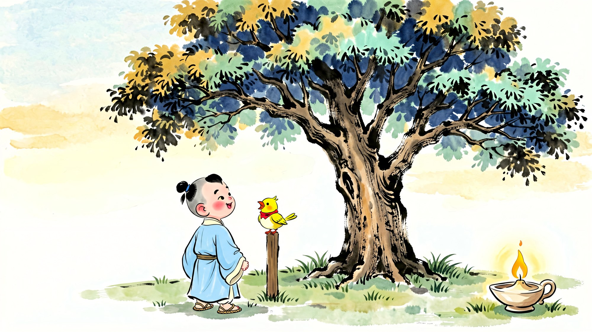
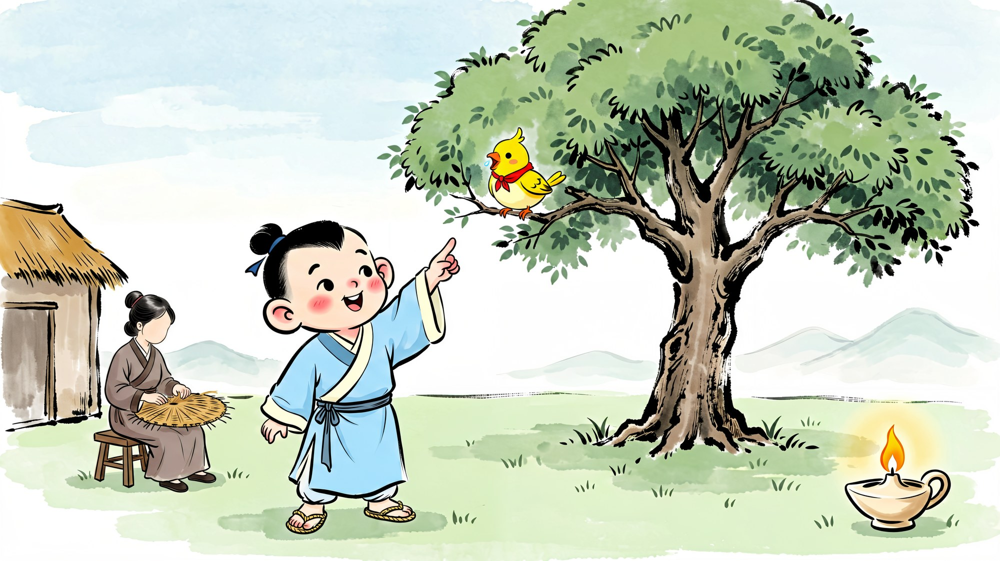
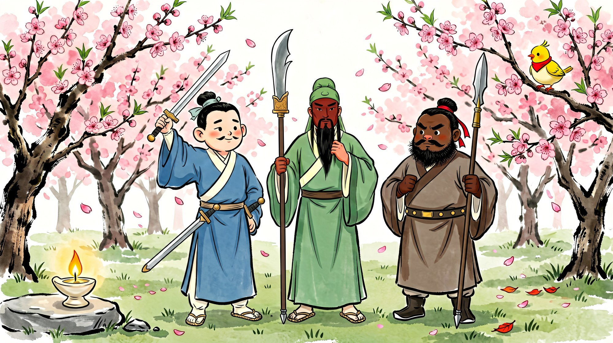
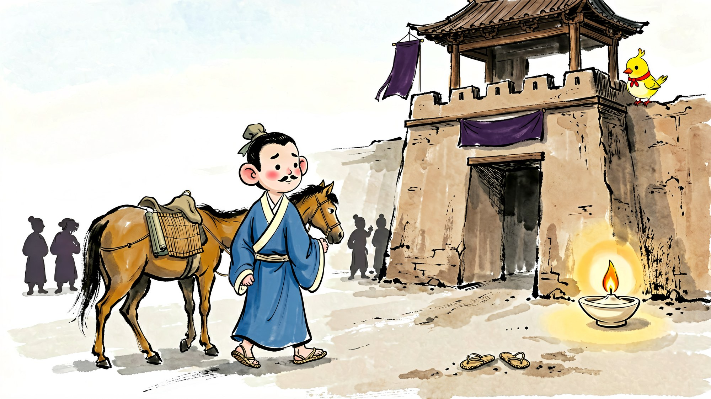
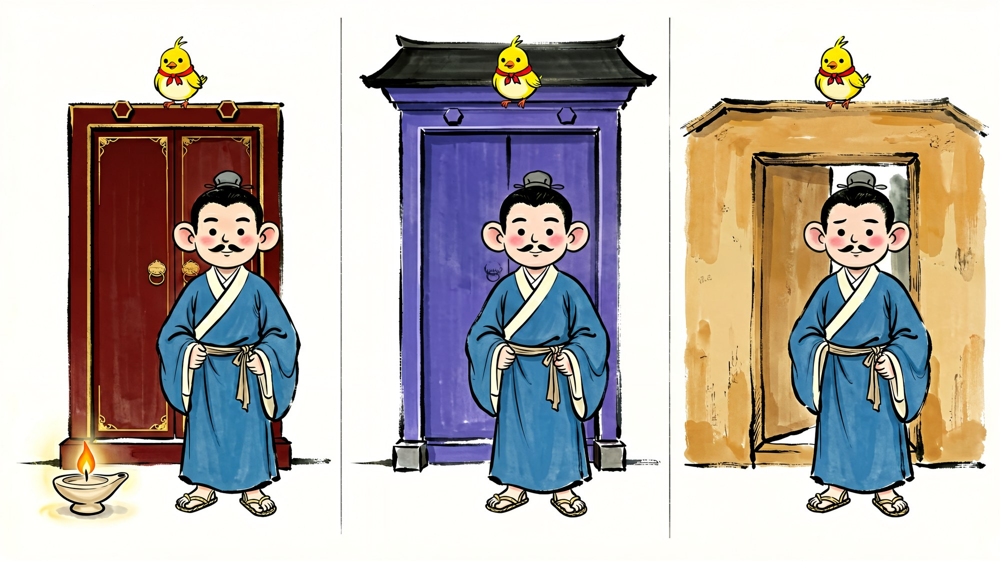
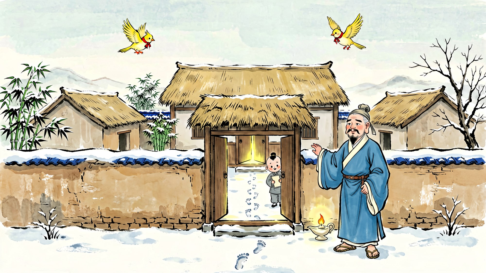
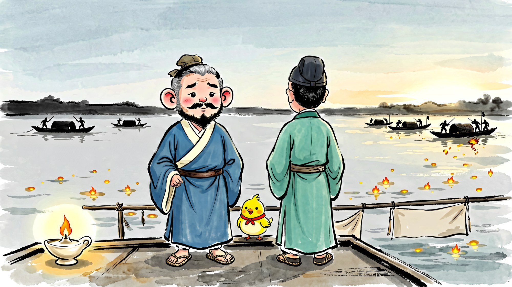
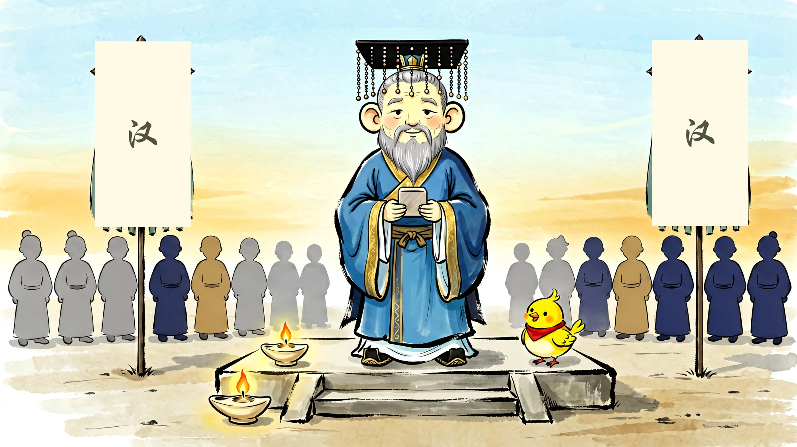
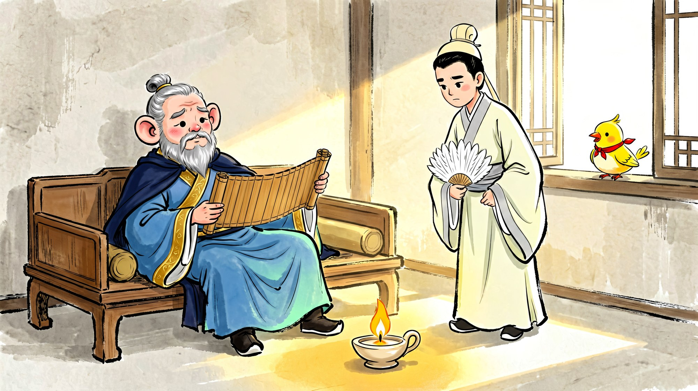

乐乐小主播
大耳朵刘玄德
三十七年不放弃
01封面
动作提示：站定，微笑，看观众
大家好，我是乐乐小主播 ×××。今天的故事叫《大耳朵刘玄德——三十七年不放弃》。

02穷孩子与大桑树
动作提示：翻页时手指向前上方（指树）；说“你们谁能做到”时自己伸手比一比
很久以前有个小男孩叫刘备。他很小就没了爸爸，家里很穷，天天和妈妈一起编草鞋、编席子，换米吃。（停一拍）他家院子里有一棵大桑树，像一把大伞。他指着树说：「等我长大，一定要坐上这样的大车！」（停一拍，转向小朋友）书上还说，他长大以后个子很高，耳朵很大，胳膊特别长，手垂下来能到膝盖——你们谁能做到呀？

03两个好朋友，二十四岁出发
动作提示：迈一步，做“出发”的动作
长大以后，他认识了两个好朋友，关羽和张飞，好得像亲兄弟。二十四岁那年，他带着他们走出家门：我要做一件大事！

04第一次摔跤：家没了
动作提示：语气放低
可是打了好多年，好不容易当上徐州的主人，家却被人偷走了。他只好从头再来。

05到处借住的人
动作提示：伸三根手指：曹操、袁绍、刘表
他去投靠别人：跟过曹操，跟过袁绍，跟过刘表。走到哪里，都住在别人的屋檐下。

06四十七岁的眼泪
动作提示：全片最慢最轻的一页，停一拍再说
四十七岁那年，他摸到自己大腿上长了肉，哭了。他说：「日子一天天过去，我的大事还没有做成啊！」

07三次去请一个人
动作提示：每说一次举一根手指：一次、两次、三次
他没有停下来。听说山里有个二十七岁的年轻人很厉害，他就一次、两次、三次去请他。第三次，那扇门终于开了。

08第一次大胜：赤壁
动作提示：语气放开，这是第一次赢
四十八岁，他和孙权一起，在赤壁打赢了人生第一场大胜仗。

09三十七年
动作提示：双手张开，慢慢向上
六十一岁那年，他在成都当上了皇帝。从二十四岁出发，他整整走了三十七年。

10最后一课
动作提示：面向小朋友，摊开手问
最后一课，他留给儿子两句话：「不要因为坏事很小就去做；不要因为好事很小就不做。」小朋友们，刘备输过很多次，可他一次都没有放弃。你心里的小火苗，还在吗？